Lesson 1: the rendering equation
Calcolo numerico per la generazione di immagini fotorealistiche
Maurizio Tomasi maurizio.tomasi@unimi.it
Introduction
These Slides
They are available at ziotom78.github.io/raytracing_course/.
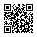
General Guidelines
Monday theory lessons are recorded and uploaded to Ariel
Attendance is required for laboratories (sign-in required)
Questions outside of lessons:
If related to theory topics or of general interest, ask on the Ariel forum
If specific to your own code, contact the instructor (maurizio.tomasi@unimi.it)
Schedule
- Every Monday: theory (recorded)
- Every Wednesday: programming (participation is mandatory)
- Week of March 16: we might have to skip this
- Week after Easter: “special” lesson on April 8
- Week of April 27: we might have to skip this
- Week of June 8: end of the course (at most)
Course Objectives
- How to translate a physical model into numerical code?
- How to write well-structured and documented code?
- How to generate photorealistic images?
This is a multidisciplinary course: not reserved for cosmologists and astrophysicists!
Course Objectives
- How to translate a physical model into numerical code?
- How to write well-structured and documented code?
- How to generate photorealistic images?
This is a multidisciplinary course: not reserved for cosmologists and astrophysicists!
Numerical Solutions
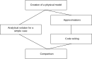
The Usefulness of Simulations
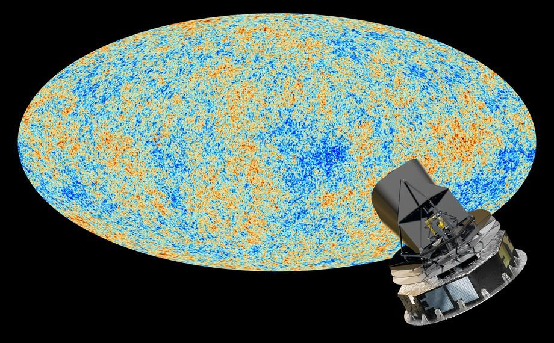
Planck: ESA space mission (2009–2013)
The Usefulness of Simulations
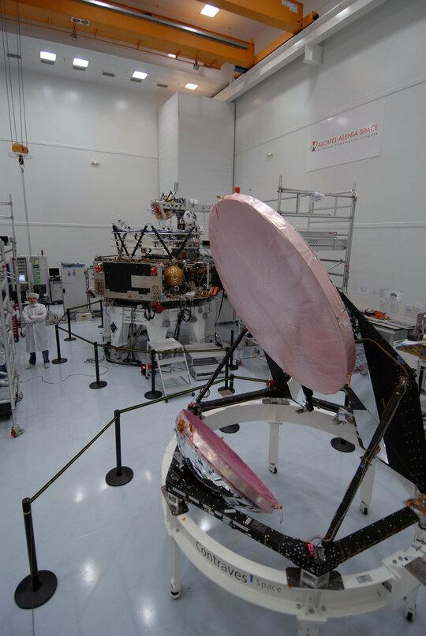
Assembly of the probe in ESA laboratories
The Usefulness of Simulations

The Usefulness of Simulations

Course Objectives
- How to translate a physical model into numerical code?
- How to write well-structured and documented code?
- How to generate photorealistic images?
Public repositories
List of changes
Automatic tests
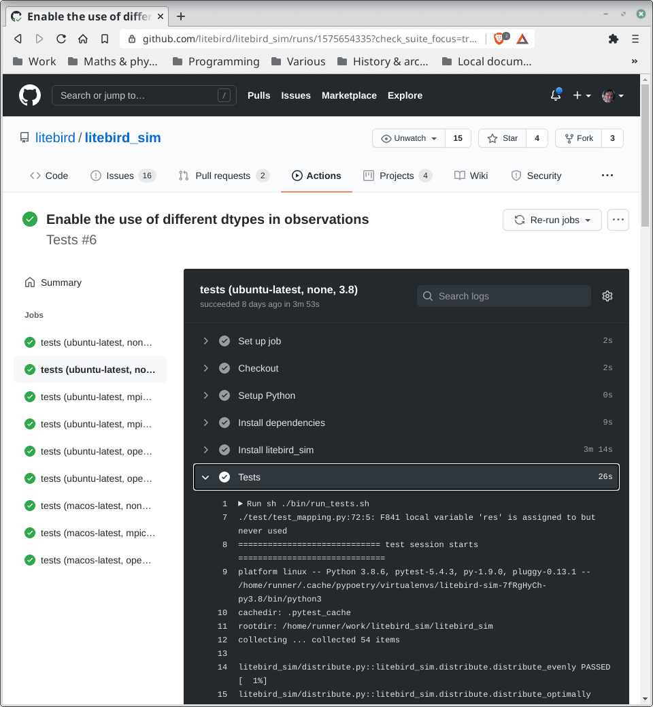
Bug tracking
Teamwork
Course Objectives
- How to translate a physical model into numerical code?
- How to write well-structured and documented code?
- How to generate photorealistic images?
Image Generation
Vivian Maier (1926–2009), Self-portrait
Oceania (R. Clements, J. Musker, D. Hall, C. Williams, 2016)
Bibliography
- Physically Based Rendering: from Theory to Implementation (M. Pharr, W. Jakob, G. Humphreys, 4th ed.): quite complex but complete, it’s the gold standard for this topic. It’s available online.
- Advanced Global Illumination (P. Dutré, K. Bala, P. Bekaert, 2nd ed.): we’ll use it for the most “physical” parts.
- Realistic Ray Tracing (P. Shirley, R. K. Morley, 2nd ed.): old-fashioned, it’s useful just as an introductory text.
Radiometry
Light Propagation
- Quantum optics (not used in computer graphics)
- Wave model (diffraction, e.g., soap bubbles)
- Geometrical optics
(see Dutré, Bala, Bekaert)
Geometrical Optics
- Light propagates along straight lines (geodesics)
- The speed of light is assumed to be infinite
- The wavelength is assumed to tend to zero (frequency → ∞)
- Propagation is not affected by gravitational or magnetic effects
Why Do We Need Radiometry?
- In this course, we will deal with radiometry, the science that studies how radiation propagates through a medium.
- The important goal is to define quantities that characterize radiation as independently as possible from the instruments that measure it.
Radiometric Quantities
- Emitted energy (Joules)
- Radiant power, or flux (Energy passing through a surface per unit time)
- Irradiance, radiant emittance (flux normalized over a surface)
- Radiance (← the core of the course!)
- The definitions we will use are those used in computer graphics, but they may differ in other fields of physics! (For example, in astronomy, irradiance is called flux).
Flux
- Energy passing through a surface A per unit time: \Phi
- [\Phi] = \mathrm{W} (in physics, flux is instead measured as \mathrm{W}/\mathrm{m}^2!).
- Example: A is the surface of a detector, such as the human pupil or a camera lens.
- The larger the surface A, the greater the flux \Phi.
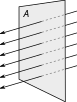
Irradiance/Emittance
Flux \Phi normalized over the surface: I, E = \frac{\mathrm{d}\Phi}{\mathrm{d}A}, \qquad [I] = \mathrm{W}/\mathrm{m}^2.
Irradiance I: what falls on \mathrm{d}A; emittance E: what leaves \mathrm{d}A.
Radiance
- This is what interests us!
- Flux \Phi normalized over the projected surface per unit solid angle: L = \frac{\mathrm{d}^2\Phi}{\mathrm{d}\Omega\,\mathrm{d}A^\perp} = \frac{\mathrm{d}^2\Phi}{\mathrm{d}\Omega\,\mathrm{d}A\,\cos\theta}, \qquad [L] = \mathrm{W}/\mathrm{m}^2/\mathrm{sr}.
- Like irradiance and emittance, radiance is a function of the point \mathbf{x} on the surface \mathrm{d}A: L = L(\mathbf{x}).
Solid Angles and Distance
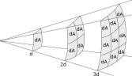
- Since I \propto A^{-1} \propto d^{-2}, the irradiance on \mathrm{d}A at 3d is 1/9 of that at d.
- But \mathrm{d}\Omega = dA/d^2 \propto d^{-2}.
- Therefore, L \propto I/\mathrm{d}\Omega does not depend on d.
Radiance
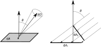
- The ratio over the solid angle removes the dependence on the distance.
- The presence of \cos\theta removes the dependence on the orientation of \mathrm{d}A.
Notation for Radiance
We will often use the notation L(\mathbf{x} \rightarrow \Theta) to indicate the radiance leaving a surface at point \mathbf{x} towards direction \Theta, which is associated with a solid angle \mathrm{d}\Omega.
Similarly, L(\mathbf{x} \leftarrow \Theta) represents the radiance coming from direction \Theta and incident on \mathbf{x}.
Emission Spectra
Each of the quantities discussed so far are actually wavelength-dependent.
Different light sources have different spectra:


Spectral Radiance
From radiance L(\mathbf{x} \leftrightarrow \Theta), we can define spectral radiance L_\lambda(\mathbf{x} \leftrightarrow \Theta), which refers to the wavelength interval [\lambda, \lambda + \mathrm{d}\lambda] and is denoted by the same letter L for convenience.
It is defined by the equation
L(\mathbf{x} \leftrightarrow \Theta) = \int_0^\infty L_\lambda(\mathbf{x} \leftrightarrow \Theta)\,\mathrm{d}\lambda, \ {} [L_\lambda(\mathbf{x} \leftrightarrow \Theta, \lambda)] = \mathrm{W}/\mathrm{m}^2/\mathrm{sr}/\mathrm{m}.
Properties of L
From L, we can derive \Phi, I, and E. For example:
\Phi = \iint_{A, \Omega} L(\mathbf{x} \rightarrow \Theta)\, \cos\theta\,\mathrm{d}\Omega\,\mathrm{d}A_\mathbf{x},
In the absence of attenuation, it holds that L(\mathbf{x} \rightarrow \mathbf{y}) = L(\mathbf{x} \rightarrow \mathbf{z}), if \mathbf{x}, \mathbf{y}, \mathbf{z} lie on the same line; the same applies to L_\lambda.
The fact that L and L_\lambda do not depend on distance implies that the perceived color of an object at distance d does not change as d varies (if there is no attenuation).
Example
Consider a diffuse emitter, an object that emits light uniformly in all directions:
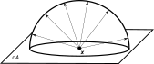
In this case, L(\mathbf{x} \rightarrow \Theta) = L_e\qquad\text{(constant)}.
Flux [W] Calculation
\begin{aligned} \Phi &= \iint_{A, \Omega} L(\mathbf{x} \rightarrow \Theta)\,\cos\theta\,\mathrm{d}\Omega\,\mathrm{d}A =\\ &= \iint_{A, \Omega} L_e\,\cos\theta\,\mathrm{d}\Omega\,\mathrm{d}A =\\ &= L_e \int_A \mathrm{d}A \int_\Omega \cos\theta\,\mathrm{d}\Omega =\\ &= L_e \int_A \mathrm{d}A \int_0^{2\pi}\mathrm{d}\phi \int_0^{\pi/2}\mathrm{d}\theta \cos\theta\,\sin\theta =\\ &= \pi A L_e.\\ \end{aligned}
Light/Surface Interaction
«Cornell box»
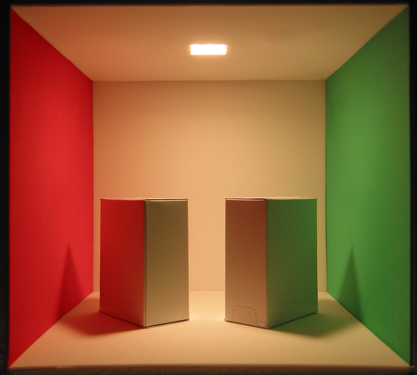
«Cornell box»

Estimating the radiance
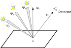
We will need to estimate the radiance entering our eye from a given direction.
Many light sources: L(\mathbf{x} \rightarrow \Theta) = \sum_i L_i (\Psi_i \rightarrow \mathbf{x} \rightarrow \Theta).
From sums to integrals
But we do not have discrete sources in general, so the discrete sum should become an integral over the solid angle:
L(\mathbf{x} \rightarrow \Theta) = \int_{4\pi} L (\Psi \rightarrow \mathbf{x} \rightarrow \Theta)\,\mathrm{d}\omega
But the formula still does not work:
- The right-hand side is no longer normalized on the solid angle as the left side
- Part of the energy might be absorbed by \mathbf{x}
- If the light source is inclined, less energy can be reflected
To account for these effect, we introduce the BRDF.
The BRDF
The Bidirectional Reflectance Distribution Function (BRDF) is the ratio f_r(x, \Psi \rightarrow \Theta) between the radiance leaving a surface along \Theta and the irradiance (flux normalized over A, \mathrm{W}/\mathrm{m}^2) received from a direction \Psi:
\begin{aligned} f_r(x, \Psi \rightarrow \Theta) &= \frac{\mathrm{d}L (x \rightarrow \Theta)}{\mathrm{d}I(x \leftarrow \Psi)} = \\ &= \frac{\mathrm{d}L (x \rightarrow \Theta)}{ L(x \leftarrow \Psi) \cos(N_x, \Psi)\,\mathrm{d}\omega_\Psi }, \end{aligned} where \cos(N_x, \Psi) is the angle between the normal to \mathrm{d}A and the incident direction \Psi.
The BRDF
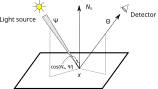
L_\text{tot}(x \rightarrow \Theta) = \int_{\Omega_x} f_r(x, \Psi \rightarrow \Theta) L(x \leftarrow \Psi)\,\cos(N_x, \Psi)\,\mathrm{d}\omega_\Psi.
Meaning of the BRDF
- Describes how a surface interacts with light;
- f_r \propto \cos^{-1}(N_x, \Psi): the inclination of the light source with respect to \mathrm{d}A is taken into account.
- f_r : \mathbb{R}^3 \times \mathbb{R}^2 \times \mathbb{R}^2 \rightarrow \mathbb{R} (x\times\Theta\times\Psi \rightarrow f_r), but in the most general case it also depends on \lambda and time t;
- It is a positive function: f_r \geq 0, and its unit of measure is 1/\mathrm{sr};
- The entire solid angle 4\pi is considered, because the BRDF is also used for (semi-)transparent surfaces.
- It assumes that light leaves the surface from the same point x where it encountered it (not true for subsurface scattering!).
Helmholtz Reciprocity
The Helmholtz reciprocity holds for the BRDF: f_r(x, \Psi\rightarrow\Theta) = f_r(x, \Theta\rightarrow\Psi), that is, the BRDF does not change if the incoming direction is exchanged with the outgoing one.
This property can be demonstrated using Maxwell’s equations, but the demonstration is long and not particularly interesting for our purposes.
Ideal Diffusive Surface
All incident radiation is distributed over the 2\pi hemisphere, so the BRDF is constant: f_r(x, \Psi \rightarrow \Theta) = \frac{\rho_d}\pi, where 0 \leq \rho_d \leq 1 is the fraction of incident energy that is reflected.
Other BRDFs
A perfectly reflective surface is modeled by a Dirac Delta, that is, identically null except in the outgoing direction R given by the reflection law: R = 2(N \cdot \Psi) N - \Psi, where N is the normal (tangent) vector to the surface.
Online libraries of BRDFs exist, usually obtained from laboratory measurements, almost all of which require a paid fee.
The Rendering Equation
Formulation of the Equation
The equation we will study during the course is the following: \begin{aligned} L(x \rightarrow \Theta) = &L_e(x \rightarrow \Theta) +\\ &\int_{\Omega_x} f_r(x, \Psi \rightarrow \Theta)\,L(x \leftarrow \Psi)\,\cos(N_x, \Psi)\,\mathrm{d}\omega_\Psi, \end{aligned} where L_e is the radiance emitted by the surface at point x along the direction \Theta.
A note about LLMs
Using LLMs in this course
Try not to use them for the first month or so. If you are not yet familiar with the language, LLMs will mislead you
For now, rely on traditional media: manuals, official documentation, and high-quality YouTube videos
I am not asking you to avoid LLMs forever. They are powerful! I want you to build a foundation first so you can use them effectively later.
A good advice
Whatever you believe about what the Right Thing should be, you can’t control it by refusing what is happening right now. Skipping AI is not going to help you or your career.
From the blog post, Don’t fall into the anti-AI hype by Salvatore Sanfilippo.
Why avoid LLMs on “day one”?
The value of friction: Real learning happens when you struggle with a problem. AI removes the “productive struggle.”
The productivity trap: AI decouples output from understanding. You may produce working code without actually learning the underlying logic.
The “bull❄❄❄t” factor As a novice, you won’t have the “crap detector” needed to spot these errors until it’s too late.
See this post on Hacker News by the director of Ithron Research.
A few examples
LLMs do not ask questions! See this blog post and arxiv.org:2503.22674
Using a POSIX-first library in a multiplatform C++ code (LLMs suggested a solution that looked correct but would not compile on Windows, yet the README had the solution!)
Implementing mathematical operators on vectors, points, and normals in Julia (LLMs suggested to implement them using a set of
if, which is discouraged in the Julia User’s Manual because it prevents many optimizations)C++ template methods that are virtual (unsupported in C++!)
Brainstorming how to implement some rotation operators in Clifford algebras (see next slide)

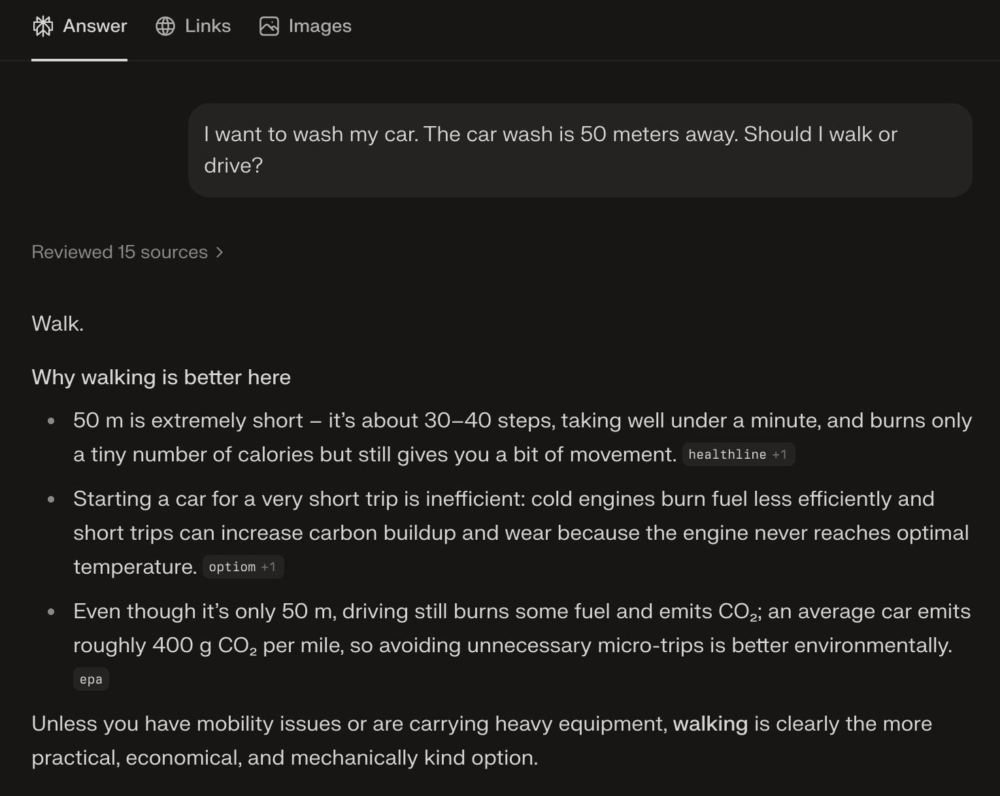
I want to wash my car. The car wash is 50 meters away. Should I walk or drive?


Conclusions
Use primary sources until you are confident with the syntax and the right “way of doing”
Use AI as a tutor, not a creator: Use LLMs to help you understand existing code:
Pick a reputable open-source project written in the language you are learning
Attempt to make sense of the code yourself first
Whenever you get stuck, ask an LLM to explain that specific section.
Cross-reference the AI’s explanation with the official documentation
This constitutes a “safe use” of LLM